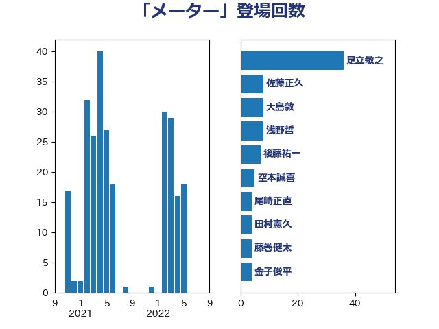

単語「メーター」

| 足立敏之 | 自由民主党 | 36 回 |
| 佐藤正久 | 自由民主党 | 8 回 |
| 大島敦 | 立憲民主党 | 8 回 |
| 浅野哲 | 国民民主党 | 8 回 |
| 後藤祐一 | 立憲民主党 | 7 回 |
| 空本誠喜 | 日本維新の会 | 5 回 |
| 尾崎正直 | 自由民主党 | 4 回 |
| 田村憲久 | 自由民主党 | 4 回 |
| 藤巻健太 | 日本維新の会 | 4 回 |
| 金子俊平 | 自由民主党 | 4 回 |
| 井上哲士 | 日本共産党 | 3 回 |
| 山崎誠 | 立憲民主党 | 3 回 |
| 岩本剛人 | 自由民主党 | 3 回 |
| 森屋隆 | 立憲民主党 | 3 回 |
| 礒崎哲史 | 国民民主党 | 3 回 |
| 音喜多駿 | 日本維新の会 | 3 回 |
| 高橋英明 | 日本維新の会 | 3 回 |
| 麻生太郎 | 自由民主党 | 3 回 |
| 下条みつ | 立憲民主党 | 2 回 |
| 井上信治 | 自由民主党 | 2 回 |
| 吉田宣弘 | 公明党 | 2 回 |
| 大野泰正 | 自由民主党 | 2 回 |
| 宮内秀樹 | 自由民主党 | 2 回 |
| 岡本三成 | 公明党 | 2 回 |
| 津島淳 | 自由民主党 | 2 回 |
| 浜口誠 | 国民民主党 | 2 回 |
| 白石洋一 | 立憲民主党 | 2 回 |
| 神津たけし | 立憲民主党 | 2 回 |
| 萩生田光一 | 自由民主党 | 2 回 |
| 豊田俊郎 | 自由民主党 | 2 回 |
| 赤羽一嘉 | 公明党 | 2 回 |
| 野田国義 | 立憲民主党 | 2 回 |
| 鈴木貴子 | 自由民主党 | 2 回 |
| 三浦信祐 | 公明党 | 1 回 |
| 小林鷹之 | 自由民主党 | 1 回 |
| 小野田紀美 | 自由民主党 | 1 回 |
| 山下芳生 | 日本共産党 | 1 回 |
| 山岸一生 | 立憲民主党 | 1 回 |
| 山崎正恭 | 公明党 | 1 回 |
| 岸信夫 | 自由民主党 | 1 回 |
| 平山佐知子 | 無所属 | 1 回 |
| 杉本和巳 | 日本維新の会 | 1 回 |
| 梅村聡 | 日本維新の会 | 1 回 |
| 田中英之 | 自由民主党 | 1 回 |
| 石原正敬 | 自由民主党 | 1 回 |
| 穀田恵二 | 日本共産党 | 1 回 |
| 芳賀道也 | 国民民主党 | 1 回 |
| 藤岡隆雄 | 立憲民主党 | 1 回 |
| 藤木眞也 | 自由民主党 | 1 回 |
| 近藤和也 | 立憲民主党 | 1 回 |
| 金子恵美 | 立憲民主党 | 1 回 |
| 鈴木敦 | 国民民主党 | 1 回 |
| 鈴木義弘 | 国民民主党 | 1 回 |
| 須藤元気 | 無所属 | 1 回 |
| 高橋千鶴子 | 日本共産党 | 1 回 |